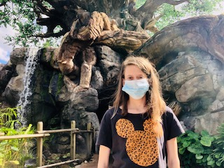

I have a variety of hobbies and enjoy each of them for different reasons. There are a few that I enjoy independently and some that I like with family and friends. Below are some of my favorites.
I wanted to expand a little more on each section. I currently live in Gainesville, so I love being by nature. Two of my favorite places here are Payne's Prairie and Loblolly Woods. I haven't lived in Gainesville for too long, and I think board games are a fun group activity when meeting new people. I recently tried Throw Throw Burrito. I just set up my Goodreads 2022 challenge and hoping to complete it. I am currently reading Where The Crawdads Sing by Dalia Owens. I have fun visiting with animals. I mainly spend time with dogs and cats but love seeing others!
Over the past year, I encouraged myself to engage in more interests. I am experimenting with cooking. I am creating meals through some of my staple items: rice, beans, eggs, etc. It is important to me since I want to be healthy and save money! I want like to visit new places. Florida has so much to offer, and I hope to explore more. I want to exercise more, so I should use my apartment's gym more. Some of my general interests include animals, film, and nature.
In college, I mostly wanted to work on films and create content. However, I participated in the Disney College Program after graduation. So, I have an interest in customer service as well. My goal is to combine these interests. I love helping others and want the content to be meaningful. Disney aside, I would also be interested in helping smaller brands improve their brand awareness. Another career goal is to advance in my field. I have had many supportive supervisors over the past few years, so I am interested in supervising others one day. Below is a photo of me at Disney World. 